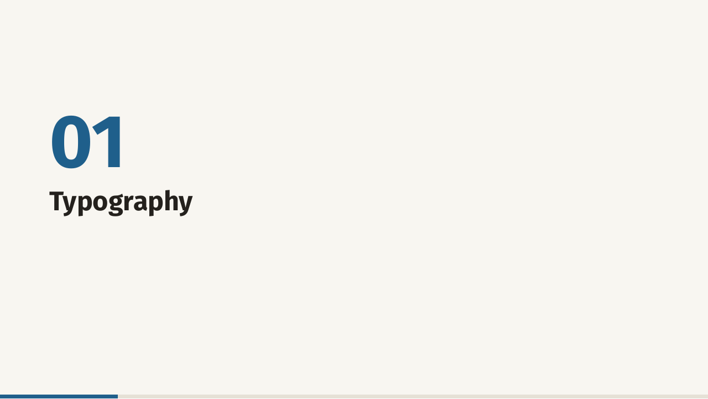
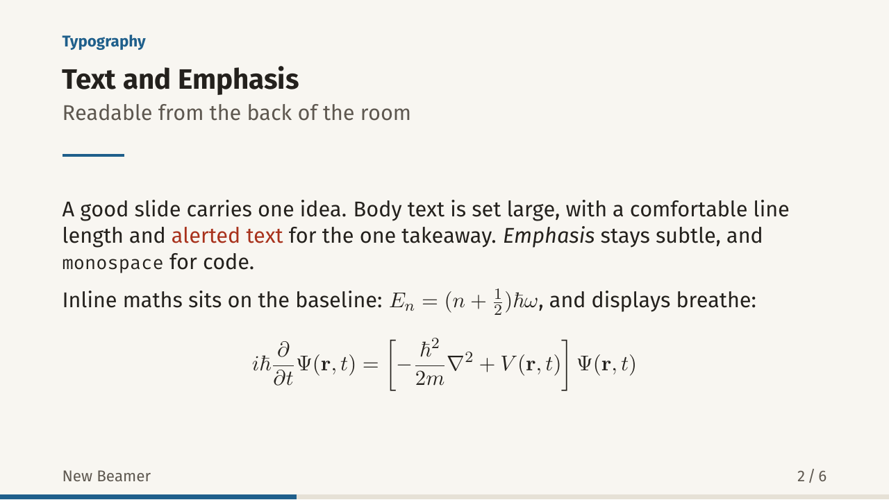
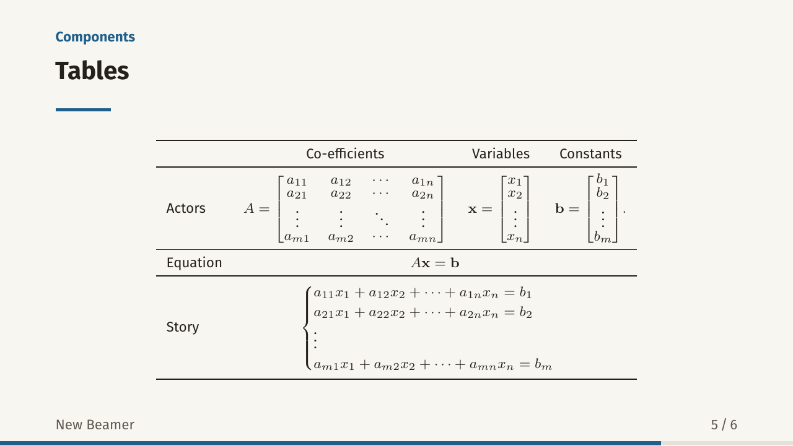
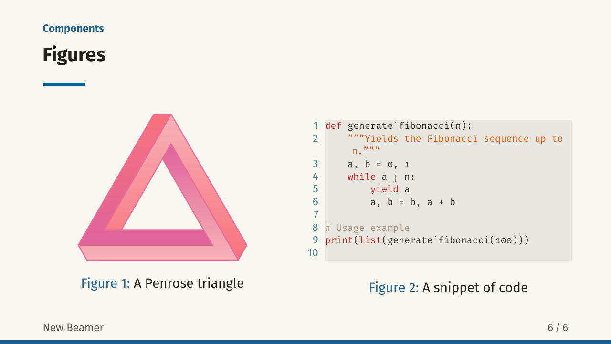
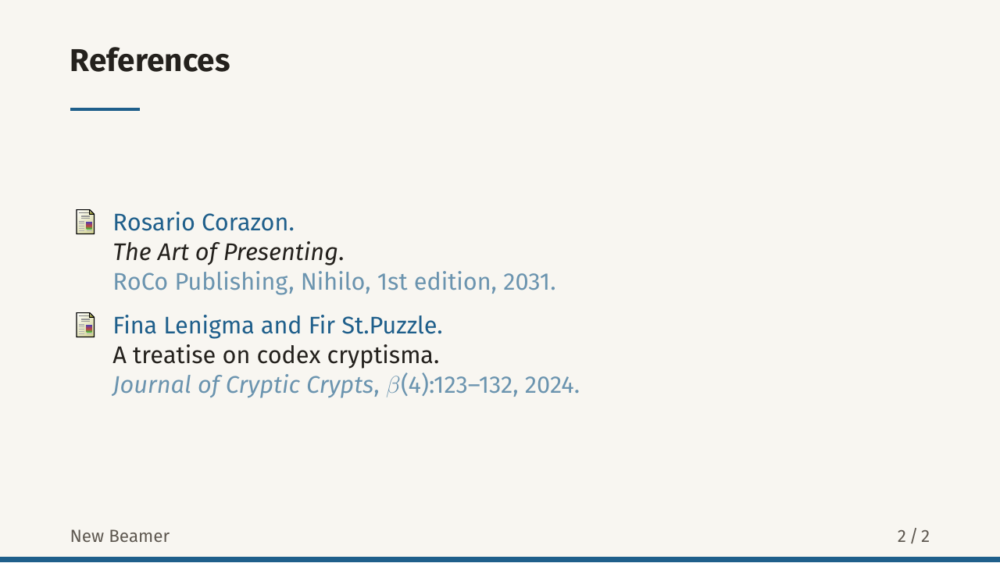
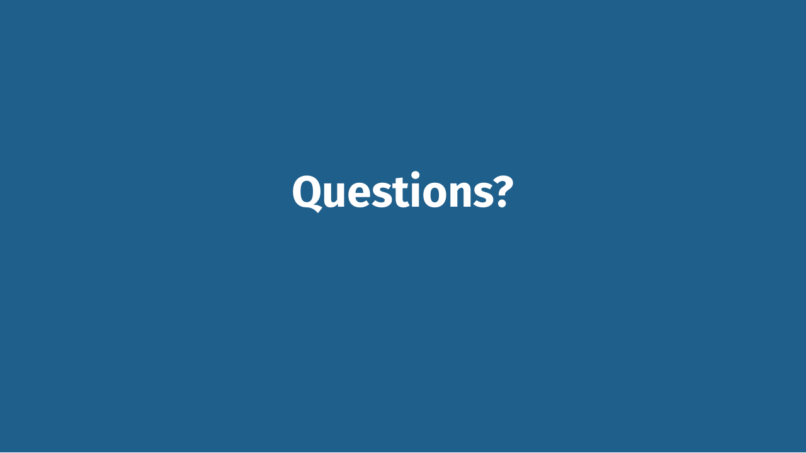

Themes / Meridian
Meridian
A clean and lightweight theme with generous whitespace and a single accent colour. Comes in three variants and offers a slim progress bar.
Inside the deck














Compiled with default variant (horizon). Click a slide to enlarge it.
Try an accent colour
Rule of Thumb
Picking the right accent
Legibility matters
- Everything on a slide is meant to be seen.
- Ambient lighting also affects visibility.
TakeawayPick the variant and accent for the room, not just the screen.
ThemeForge3 / 8
- AaInk on paper
- AaAccent on paper
- AaAccent on block
- AaPaper on accent
Customise the accent colour
Use it
Put the theme file next to your .tex file, then add this line after \documentclass{beamer}:
\usetheme{Meridian}